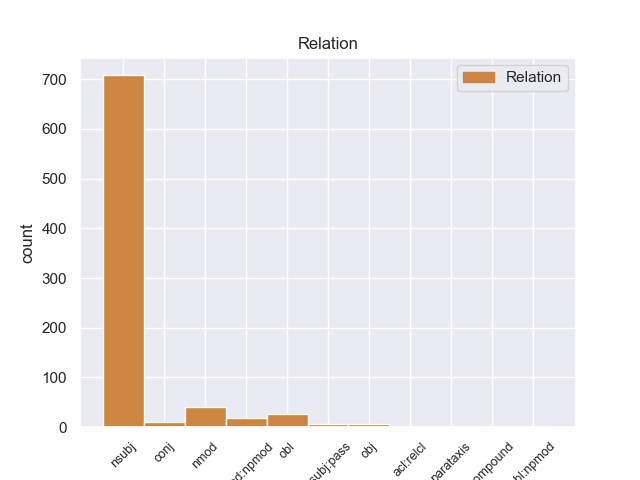
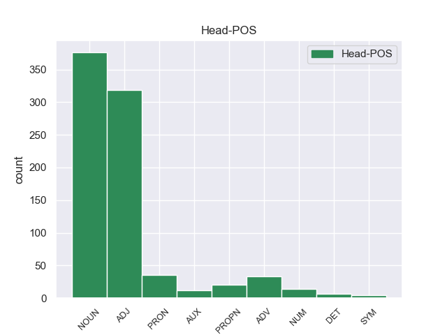

Distribution of features within this leaf



Morphosyntax Rules sorted by frequency.
- When the dependent token is the nominal subject(nsubj) of the head token, and the head token is ADJ the Gender needs to be Fem.
1 Then _ _ _ _ 0 _ _ _
2 she she PRON PRP Case=Nom|Gender=Fem|Number=Sing|Person=3|PronType=Prs 4 nsubj 4:nsubj _
3 was _ _ _ _ 0 _ _ _
4 gone gone ADJ JJ Degree=Pos 0 _ _ _
5 . _ _ _ _ 0 _ _ _
1 She she PRON PRP Case=Nom|Gender=Fem|Number=Sing|Person=3|PronType=Prs 12 nsubj 12:nsubj _
2 is _ _ _ _ 0 _ _ _
3 a _ _ _ _ 0 _ _ _
4 super _ _ _ _ 0 _ _ _
5 sweet _ _ _ _ 0 _ _ _
6 , _ _ _ _ 0 _ _ _
7 lovable _ _ _ _ 0 _ _ _
8 and _ _ _ _ 0 _ _ _
9 well _ _ _ _ 0 _ _ _
10 - _ _ _ _ 0 _ _ _
11 informed _ _ _ _ 0 _ _ _
12 woman woman NOUN NN Number=Sing 0 _ _ _
13 with _ _ _ _ 0 _ _ _
14 a _ _ _ _ 0 _ _ _
15 great _ _ _ _ 0 _ _ _
16 sense _ _ _ _ 0 _ _ _
17 of _ _ _ _ 0 _ _ _
18 humor _ _ _ _ 0 _ _ _
19 . _ _ _ _ 0 _ _ _
1 1 _ _ _ _ 0 _ _ _
2 ) _ _ _ _ 0 _ _ _
3 When _ _ _ _ 0 _ _ _
4 you _ _ _ _ 0 _ _ _
5 get _ _ _ _ 0 _ _ _
6 the _ _ _ _ 0 _ _ _
7 bird _ _ _ _ 0 _ _ _
8 , _ _ _ _ 0 _ _ _
9 place _ _ _ _ 0 _ _ _
10 him he PRON PRP Case=Acc|Gender=Masc|Number=Sing|Person=3|PronType=Prs 0 _ _ _
11 or _ _ _ _ 0 _ _ _
12 her she PRON PRP Case=Acc|Gender=Fem|Number=Sing|Person=3|PronType=Prs 10 conj 9:obj|10:conj:or _
13 or _ _ _ _ 0 _ _ _
14 them _ _ _ _ 0 _ _ _
15 in _ _ _ _ 0 _ _ _
16 the _ _ _ _ 0 _ _ _
17 cage _ _ _ _ 0 _ _ _
18 . _ _ _ _ 0 _ _ _
1 I _ _ _ _ 0 _ _ _
2 have _ _ _ _ 0 _ _ _
3 never _ _ _ _ 0 _ _ _
4 seen _ _ _ _ 0 _ _ _
5 this _ _ _ _ 0 _ _ _
6 car _ _ _ _ 0 _ _ _
7 before _ _ _ _ 0 _ _ _
8 until _ _ _ _ 0 _ _ _
9 this _ _ _ _ 0 _ _ _
10 lady _ _ _ _ 0 _ _ _
11 at _ _ _ _ 0 _ _ _
12 wal _ _ _ _ 0 _ _ _
13 mart _ _ _ _ 0 _ _ _
14 had _ _ _ _ 0 _ _ _
15 it _ _ _ _ 0 _ _ _
16 and _ _ _ _ 0 _ _ _
17 she _ _ _ _ 0 _ _ _
18 told _ _ _ _ 0 _ _ _
19 me _ _ _ _ 0 _ _ _
20 she _ _ _ _ 0 _ _ _
21 got _ _ _ _ 0 _ _ _
22 it _ _ _ _ 0 _ _ _
23 here _ _ _ _ 0 _ _ _
24 and _ _ _ _ 0 _ _ _
25 that _ _ _ _ 0 _ _ _
26 everyone _ _ _ _ 0 _ _ _
27 was _ _ _ _ 0 _ _ _
28 so _ _ _ _ 0 _ _ _
29 nice nice ADJ JJ Degree=Pos 0 _ _ _
30 to _ _ _ _ 0 _ _ _
31 her she PRON PRP Case=Acc|Gender=Fem|Number=Sing|Person=3|PronType=Prs 29 obl 29:obl:to SpaceAfter=No
32 . _ _ _ _ 0 _ _ _
1 She she PRON PRP Case=Nom|Gender=Fem|Number=Sing|Person=3|PronType=Prs 5 nsubj 5:nsubj _
2 has _ _ _ _ 0 _ _ _
3 always _ _ _ _ 0 _ _ _
4 been _ _ _ _ 0 _ _ _
5 there there ADV RB PronType=Dem 0 _ _ _
6 for _ _ _ _ 0 _ _ _
7 Gracee _ _ _ _ 0 _ _ _
8 even _ _ _ _ 0 _ _ _
9 for _ _ _ _ 0 _ _ _
10 last _ _ _ _ 0 _ _ _
11 minute _ _ _ _ 0 _ _ _
12 calls _ _ _ _ 0 _ _ _
13 ! _ _ _ _ 0 _ _ _
1 I _ _ _ _ 0 _ _ _
2 'm _ _ _ _ 0 _ _ _
3 not _ _ _ _ 0 _ _ _
4 interested _ _ _ _ 0 _ _ _
5 in _ _ _ _ 0 _ _ _
6 shopping _ _ _ _ 0 _ _ _
7 in _ _ _ _ 0 _ _ _
8 a _ _ _ _ 0 _ _ _
9 place _ _ _ _ 0 _ _ _
10 with _ _ _ _ 0 _ _ _
11 people people NOUN NNS Number=Plur 0 _ _ _
12 like _ _ _ _ 0 _ _ _
13 her she PRON PRP Case=Acc|Gender=Fem|Number=Sing|Person=3|PronType=Prs 11 nmod 11:nmod:like SpaceAfter=No
14 ... _ _ _ _ 0 _ _ _
15 she _ _ _ _ 0 _ _ _
16 refused _ _ _ _ 0 _ _ _
17 to _ _ _ _ 0 _ _ _
18 sell _ _ _ _ 0 _ _ _
19 me _ _ _ _ 0 _ _ _
20 the _ _ _ _ 0 _ _ _
21 item _ _ _ _ 0 _ _ _
22 at _ _ _ _ 0 _ _ _
23 its _ _ _ _ 0 _ _ _
24 marked _ _ _ _ 0 _ _ _
25 price _ _ _ _ 0 _ _ _
26 even _ _ _ _ 0 _ _ _
27 after _ _ _ _ 0 _ _ _
28 admitting _ _ _ _ 0 _ _ _
29 they _ _ _ _ 0 _ _ _
30 had _ _ _ _ 0 _ _ _
31 made _ _ _ _ 0 _ _ _
32 a _ _ _ _ 0 _ _ _
33 mistake _ _ _ _ 0 _ _ _
34 . _ _ _ _ 0 _ _ _
1 She she PRON PRP Case=Nom|Gender=Fem|Number=Sing|Person=3|PronType=Prs 4 nsubj 4:nsubj _
2 will _ _ _ _ 0 _ _ _
3 be _ _ _ _ 0 _ _ _
4 20 20 NUM CD NumType=Card 0 _ _ _
5 on _ _ _ _ 0 _ _ _
6 11/03 _ _ _ _ 0 _ _ _
7 . _ _ _ _ 0 _ _ _
1 Gracee _ _ _ _ 0 _ _ _
2 is _ _ _ _ 0 _ _ _
3 more _ _ _ _ 0 _ _ _
4 excited _ _ _ _ 0 _ _ _
5 to _ _ _ _ 0 _ _ _
6 see _ _ _ _ 0 _ _ _
7 her _ _ _ _ 0 _ _ _
8 than _ _ _ _ 0 _ _ _
When the dependent token is the nominal modifier(nmod) of the head token, and the head token is PRON the Gender needs to be Fem.
1 She _ _ _ _ 0 _ _ _
2 has _ _ _ _ 0 _ _ _
3 taken _ _ _ _ 0 _ _ _
4 care _ _ _ _ 0 _ _ _
5 of _ _ _ _ 0 _ _ _
6 my _ _ _ _ 0 _ _ _
7 sweet _ _ _ _ 0 _ _ _
8 girl _ _ _ _ 0 _ _ _
9 for _ _ _ _ 0 _ _ _
10 almost _ _ _ _ 0 _ _ _
11 4 _ _ _ _ 0 _ _ _
12 years _ _ _ _ 0 _ _ _
13 now _ _ _ _ 0 _ _ _
14 and _ _ _ _ 0 _ _ _
15 I _ _ _ _ 0 _ _ _
16 would _ _ _ _ 0 _ _ _
17 not _ _ _ _ 0 _ _ _
18 let _ _ _ _ 0 _ _ _
19 Gracee _ _ _ _ 0 _ _ _
20 go _ _ _ _ 0 _ _ _
21 with _ _ _ _ 0 _ _ _
22 anyone anyone PRON NN Number=Sing 0 _ _ _
23 besides _ _ _ _ 0 _ _ _
24 her she PRON PRP Case=Acc|Gender=Fem|Number=Sing|Person=3|PronType=Prs 22 nmod 22:nmod:besides SpaceAfter=No
25 !!! _ _ _ _ 0 _ _ _
When the dependent token is the object(obj) of the head token, and the head token is ADJ the Gender needs to be Fem.
1 He _ _ _ _ 0 _ _ _
2 was _ _ _ _ 0 _ _ _
3 an _ _ _ _ 0 _ _ _
4 okay _ _ _ _ 0 _ _ _
5 doctor _ _ _ _ 0 _ _ _
6 but _ _ _ _ 0 _ _ _
7 not _ _ _ _ 0 _ _ _
8 worth worth ADJ JJ Degree=Pos 0 _ _ _
9 her she PRON PRP Case=Acc|Gender=Fem|Number=Sing|Person=3|PronType=Prs 8 obj 8:obj SpaceAfter=No
10 . _ _ _ _ 0 _ _ _
When the dependent token is the noun phrase as adverbial modifier(nmod:npmod) of the head token, and the head token is NOUN the Gender needs to be Fem.
1 Everyone _ _ _ _ 0 _ _ _
2 was _ _ _ _ 0 _ _ _
3 friendly _ _ _ _ 0 _ _ _
4 from _ _ _ _ 0 _ _ _
5 the _ _ _ _ 0 _ _ _
6 receptionist _ _ _ _ 0 _ _ _
7 to _ _ _ _ 0 _ _ _
8 the _ _ _ _ 0 _ _ _
9 surgeon surgeon NOUN NN Number=Sing 0 _ _ _
10 herself herself PRON PRP Case=Acc|Gender=Fem|Number=Sing|Person=3|PronType=Prs|Reflex=Yes 9 nmod:npmod 9:nmod:npmod SpaceAfter=No
11 , _ _ _ _ 0 _ _ _
12 putting _ _ _ _ 0 _ _ _
13 me _ _ _ _ 0 _ _ _
14 at _ _ _ _ 0 _ _ _
15 my _ _ _ _ 0 _ _ _
16 ease _ _ _ _ 0 _ _ _
17 and _ _ _ _ 0 _ _ _
18 explaining _ _ _ _ 0 _ _ _
19 the _ _ _ _ 0 _ _ _
20 whole _ _ _ _ 0 _ _ _
21 process _ _ _ _ 0 _ _ _
22 , _ _ _ _ 0 _ _ _
23 both _ _ _ _ 0 _ _ _
24 initially _ _ _ _ 0 _ _ _
25 and _ _ _ _ 0 _ _ _
26 then _ _ _ _ 0 _ _ _
27 as _ _ _ _ 0 _ _ _
28 we _ _ _ _ 0 _ _ _
29 went _ _ _ _ 0 _ _ _
30 along _ _ _ _ 0 _ _ _
31 . _ _ _ _ 0 _ _ _
When the dependent token is the passive nominal subject(nsubj:pass) of the head token, and the head token is ADJ the Gender needs to be Fem.
1 Although _ _ _ _ 0 _ _ _
2 I _ _ _ _ 0 _ _ _
3 'll _ _ _ _ 0 _ _ _
4 have _ _ _ _ 0 _ _ _
5 to _ _ _ _ 0 _ _ _
6 drive _ _ _ _ 0 _ _ _
7 a _ _ _ _ 0 _ _ _
8 little _ _ _ _ 0 _ _ _
9 out _ _ _ _ 0 _ _ _
10 of _ _ _ _ 0 _ _ _
11 my _ _ _ _ 0 _ _ _
12 way _ _ _ _ 0 _ _ _
13 to _ _ _ _ 0 _ _ _
14 go _ _ _ _ 0 _ _ _
15 there _ _ _ _ 0 _ _ _
16 , _ _ _ _ 0 _ _ _
17 I _ _ _ _ 0 _ _ _
18 'll _ _ _ _ 0 _ _ _
19 gladly _ _ _ _ 0 _ _ _
20 do _ _ _ _ 0 _ _ _
21 it _ _ _ _ 0 _ _ _
22 knowing _ _ _ _ 0 _ _ _
23 that _ _ _ _ 0 _ _ _
24 since _ _ _ _ 0 _ _ _
25 she she PRON PRP Case=Nom|Gender=Fem|Number=Sing|Person=3|PronType=Prs 28 nsubj:pass 28:nsubj:pass SpaceAfter=No
26 's _ _ _ _ 0 _ _ _
27 been _ _ _ _ 0 _ _ _
28 astounding astounding ADJ JJ Degree=Pos 0 _ _ _
29 to _ _ _ _ 0 _ _ _
30 me _ _ _ _ 0 _ _ _
31 once _ _ _ _ 0 _ _ _
32 before _ _ _ _ 0 _ _ _
33 that _ _ _ _ 0 _ _ _
34 she _ _ _ _ 0 _ _ _
35 'll _ _ _ _ 0 _ _ _
36 always _ _ _ _ 0 _ _ _
37 be _ _ _ _ 0 _ _ _
38 that _ _ _ _ 0 _ _ _
39 way _ _ _ _ 0 _ _ _
40 ! _ _ _ _ 0 _ _ _
When the dependent token is the oblique(obl:npmod) of the head token, and the head token is ADJ the Gender needs to be Fem.
1 My _ _ _ _ 0 _ _ _
2 dogs _ _ _ _ 0 _ _ _
3 are _ _ _ _ 0 _ _ _
4 far _ _ _ _ 0 _ _ _
5 from _ _ _ _ 0 _ _ _
6 perfect _ _ _ _ 0 _ _ _
7 , _ _ _ _ 0 _ _ _
8 and _ _ _ _ 0 _ _ _
9 one _ _ _ _ 0 _ _ _
10 of _ _ _ _ 0 _ _ _
11 them _ _ _ _ 0 _ _ _
12 I _ _ _ _ 0 _ _ _
13 believe _ _ _ _ 0 _ _ _
14 would _ _ _ _ 0 _ _ _
15 be _ _ _ _ 0 _ _ _
16 a _ _ _ _ 0 _ _ _
17 little _ _ _ _ 0 _ _ _
18 much much ADJ JJ Degree=Pos 0 _ _ _
19 for _ _ _ _ 0 _ _ _
20 daycare _ _ _ _ 0 _ _ _
21 here _ _ _ _ 0 _ _ _
22 herself herself PRON PRP Gender=Fem|Number=Sing|Person=3|PronType=Prs 18 obl:npmod 18:obl:npmod _
23 ( _ _ _ _ 0 _ _ _
24 at _ _ _ _ 0 _ _ _
25 least _ _ _ _ 0 _ _ _
26 initially _ _ _ _ 0 _ _ _
27 ) _ _ _ _ 0 _ _ _
28 . _ _ _ _ 0 _ _ _
non-conforming Examples:
1 ( _ _ _ _ 0 _ _ _
2 This _ _ _ _ 0 _ _ _
3 is _ _ _ _ 0 _ _ _
4 a _ _ _ _ 0 _ _ _
5 largely _ _ _ _ 0 _ _ _
6 Sunni _ _ _ _ 0 _ _ _
7 Arab _ _ _ _ 0 _ _ _
8 clan _ _ _ _ 0 _ _ _
9 , _ _ _ _ 0 _ _ _
10 and _ _ _ _ 0 _ _ _
11 some _ _ _ _ 0 _ _ _
12 Sunni _ _ _ _ 0 _ _ _
13 observers _ _ _ _ 0 _ _ _
14 have _ _ _ _ 0 _ _ _
15 accused _ _ _ _ 0 _ _ _
16 Shiite _ _ _ _ 0 _ _ _
17 elements _ _ _ _ 0 _ _ _
18 in _ _ _ _ 0 _ _ _
19 the _ _ _ _ 0 _ _ _
20 government _ _ _ _ 0 _ _ _
21 of _ _ _ _ 0 _ _ _
22 being _ _ _ _ 0 _ _ _
23 behind _ _ _ _ 0 _ _ _
24 the _ _ _ _ 0 _ _ _
25 assassination _ _ _ _ 0 _ _ _
26 ; _ _ _ _ 0 _ _ _
27 it it PRON PRP Case=Nom|Gender=Neut|Number=Sing|Person=3|PronType=Prs 32 nsubj 32:nsubj _
28 is _ _ _ _ 0 _ _ _
29 more _ _ _ _ 0 _ _ _
30 likely _ _ _ _ 0 _ _ _
31 the _ _ _ _ 0 _ _ _
32 work work NOUN NN Number=Sing 0 _ _ _
33 of _ _ _ _ 0 _ _ _
34 Sunni _ _ _ _ 0 _ _ _
35 Arab _ _ _ _ 0 _ _ _
36 guerrillas _ _ _ _ 0 _ _ _
37 punishing _ _ _ _ 0 _ _ _
38 the _ _ _ _ 0 _ _ _
39 Batawi _ _ _ _ 0 _ _ _
40 leaders _ _ _ _ 0 _ _ _
41 for _ _ _ _ 0 _ _ _
42 cooperating _ _ _ _ 0 _ _ _
43 with _ _ _ _ 0 _ _ _
44 the _ _ _ _ 0 _ _ _
45 Dec. _ _ _ _ 0 _ _ _
46 15 _ _ _ _ 0 _ _ _
47 elections _ _ _ _ 0 _ _ _
48 . _ _ _ _ 0 _ _ _
49 ) _ _ _ _ 0 _ _ _
1 But _ _ _ _ 0 _ _ _
2 in _ _ _ _ 0 _ _ _
3 my _ _ _ _ 0 _ _ _
4 view _ _ _ _ 0 _ _ _
5 it it PRON PRP Case=Nom|Gender=Neut|Number=Sing|Person=3|PronType=Prs 8 nsubj 8:nsubj _
6 is _ _ _ _ 0 _ _ _
7 highly _ _ _ _ 0 _ _ _
8 significant significant ADJ JJ Degree=Pos 0 _ _ _
9 . _ _ _ _ 0 _ _ _
1 He he PRON PRP Case=Nom|Gender=Masc|Number=Sing|Person=3|PronType=Prs 9 nsubj 9:nsubj|19:nsubj _
2 is _ _ _ _ 0 _ _ _
3 no _ _ _ _ 0 _ _ _
4 longer _ _ _ _ 0 _ _ _
5 in _ _ _ _ 0 _ _ _
6 the _ _ _ _ 0 _ _ _
7 dominant _ _ _ _ 0 _ _ _
8 Shiite _ _ _ _ 0 _ _ _
9 list list NOUN NN Number=Sing 0 _ _ _
10 , _ _ _ _ 0 _ _ _
11 the _ _ _ _ 0 _ _ _
12 United _ _ _ _ 0 _ _ _
13 Iraqi _ _ _ _ 0 _ _ _
14 Alliance _ _ _ _ 0 _ _ _
15 , _ _ _ _ 0 _ _ _
16 and _ _ _ _ 0 _ _ _
17 wo _ _ _ _ 0 _ _ _
18 n't _ _ _ _ 0 _ _ _
19 have _ _ _ _ 0 _ _ _
20 many _ _ _ _ 0 _ _ _
21 seats _ _ _ _ 0 _ _ _
22 in _ _ _ _ 0 _ _ _
23 the _ _ _ _ 0 _ _ _
24 new _ _ _ _ 0 _ _ _
25 parliament _ _ _ _ 0 _ _ _
26 . _ _ _ _ 0 _ _ _
1 I _ _ _ _ 0 _ _ _
2 guess _ _ _ _ 0 _ _ _
3 it it PRON PRP Case=Nom|Gender=Neut|Number=Sing|Person=3|PronType=Prs 44 nsubj 44:nsubj SpaceAfter=No
4 's _ _ _ _ 0 _ _ _
5 just _ _ _ _ 0 _ _ _
6 the _ _ _ _ 0 _ _ _
7 old _ _ _ _ 0 _ _ _
8 new _ _ _ _ 0 _ _ _
9 Arab _ _ _ _ 0 _ _ _
10 ' _ _ _ _ 0 _ _ _
11 Me _ _ _ _ 0 _ _ _
12 against _ _ _ _ 0 _ _ _
13 my _ _ _ _ 0 _ _ _
14 brother _ _ _ _ 0 _ _ _
15 , _ _ _ _ 0 _ _ _
16 me _ _ _ _ 0 _ _ _
17 and _ _ _ _ 0 _ _ _
18 my _ _ _ _ 0 _ _ _
19 brother _ _ _ _ 0 _ _ _
20 against _ _ _ _ 0 _ _ _
21 my _ _ _ _ 0 _ _ _
22 cousin _ _ _ _ 0 _ _ _
23 , _ _ _ _ 0 _ _ _
24 me _ _ _ _ 0 _ _ _
25 and _ _ _ _ 0 _ _ _
26 my _ _ _ _ 0 _ _ _
27 cousin _ _ _ _ 0 _ _ _
28 against _ _ _ _ 0 _ _ _
29 my _ _ _ _ 0 _ _ _
30 enemy _ _ _ _ 0 _ _ _
31 ' _ _ _ _ 0 _ _ _
32 , _ _ _ _ 0 _ _ _
33 or _ _ _ _ 0 _ _ _
34 ' _ _ _ _ 0 _ _ _
35 The _ _ _ _ 0 _ _ _
36 enemy _ _ _ _ 0 _ _ _
37 of _ _ _ _ 0 _ _ _
38 my _ _ _ _ 0 _ _ _
39 enemy _ _ _ _ 0 _ _ _
40 is _ _ _ _ 0 _ _ _
41 my _ _ _ _ 0 _ _ _
42 friend _ _ _ _ 0 _ _ _
43 ' _ _ _ _ 0 _ _ _
44 thing thing NOUN NN Number=Sing 0 _ _ _
45 going _ _ _ _ 0 _ _ _
46 on _ _ _ _ 0 _ _ _
47 again _ _ _ _ 0 _ _ _
48 . _ _ _ _ 0 _ _ _
1 It it PRON PRP Case=Nom|Gender=Neut|Number=Sing|Person=3|PronType=Prs 4 nsubj 4:nsubj _
2 is _ _ _ _ 0 _ _ _
3 a _ _ _ _ 0 _ _ _
4 time time NOUN NN Number=Sing 0 _ _ _
5 to _ _ _ _ 0 _ _ _
6 learn _ _ _ _ 0 _ _ _
7 what _ _ _ _ 0 _ _ _
8 happened _ _ _ _ 0 _ _ _
9 and _ _ _ _ 0 _ _ _
10 how _ _ _ _ 0 _ _ _
11 it _ _ _ _ 0 _ _ _
12 may _ _ _ _ 0 _ _ _
13 affect _ _ _ _ 0 _ _ _
14 the _ _ _ _ 0 _ _ _
15 future _ _ _ _ 0 _ _ _
16 . _ _ _ _ 0 _ _ _